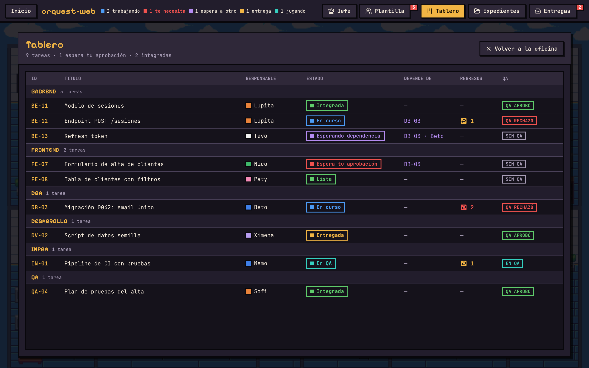
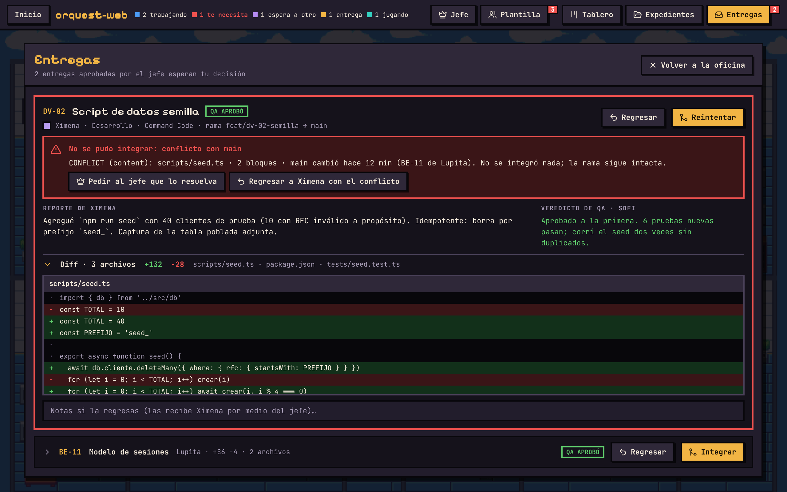

ORQUEST AI
Comercial en forma de conversación: ella le habla a Jhonny, el jefe, y la oficina hace lo que platican. Un minuto, de principio a fin de una tarea, con un error incluido.
60 s
Dos voces en ElevenLabs v3: Ella [casual] · Jhonny [friendly]
Texto para pegar: promo/guion-elevenlabs.txt
Acto 1 · El gancho
$ claude ▌ $ codex ▌ $ agy ▌ $ opencode ▌ cuatro terminales encimadas + tres cobros: $20 · $20 · $20
10–7 s
El dolor
- Se ve
- Terminales que se enciman hasta tapar la pantalla. Encima caen tres recibos de suscripción, uno por uno.
- Voz
- ¿Cansado de programar entre terminales? Pagas tres suscripciones de inteligencia artificial... y a ninguna le sacas provecho.
- Origen
- No está en el pen: se arma con tipografía y los colores del diseño.
 03-oficina-vacia
03-oficina-vacia27–10 s
El giro
- Se ve
- Las terminales se encogen y caen dentro del edificio. Queda la oficina, vacía, con el nombre encima.
- Voz
- Esto es Orquest.
- Sonido
- El ruido de teclas se corta en seco; entra la música.
Acto 2 · Conoce a Jhonny
 09-jefe-chat
09-jefe-chat310–17 s
El saludo
- Se ve
- Jhonny entra caminando y se sienta en su mesa de madera. Se abre el chat; cada frase aparece como burbuja al mismo tiempo que se oye.
- Voz
- Hola, Jhonny.
- Hola. ¿Qué necesitas?
- Hagamos una tienda en línea.
- Detalle
- Mientras ella habla, el chat marca «Jhonny · pensando…».
CinthyaClaude Code · opus
esfuerzo alto
→ Backend
esfuerzo alto
→ Backend
JuanCodex · su modelo
esfuerzo medio
→ Frontend
esfuerzo medio
→ Frontend
PabloAntigravity · su modelo
esfuerzo medio
→ Frontend
esfuerzo medio
→ Frontend
MarioOpenCode · su modelo
esfuerzo alto
→ QA
esfuerzo alto
→ QA
 05-plantilla
05-plantilla417–27 s
El equipo
- Se ve
- Al decir cada nombre entra su ficha con un golpe: personaje, nombre, proveedor, modelo, esfuerzo y puesto. Después de la cuarta, los cuatro cruzan la puerta y cada uno camina a su cubículo; las sillas se separan del escritorio.
- Voz
- Claro. Te propongo contratar a Cinthya, Juan, Pablo y Mario.
- Ritmo
- Una ficha por nombre, a tiempo con la voz. Es la toma que enseña que cada empleado es una IA distinta.
- Origen
- Las fichas se arman con el estilo de la tabla de Plantilla. Modelo y esfuerzo se copian de lo que liste la app el día de grabar, no se inventan.
Acto 3 · A trabajar

10-tablero527–34 s
La orden y el plan
- Voz
- ¿Por dónde empezamos?
- Comienza con el login.
- Va. Ya lo repartí.
- Se ve
- El chat marca «planeando…». Corte al Tablero: aparecen tres tarjetas, una por área, y la de QA queda esperando a las otras.
 06-oficina · tecleando06-oficina · completa
06-oficina · tecleando06-oficina · completa634–42 s
La jornada
- Se ve
- Sin voz. Monitores encendidos, globos de lo que hace cada quien («Editando login.ts», «Corriendo pruebas»). Uno termina, pasa por la impresora, toma su hoja y la lleva a la mesa de Jhonny. Luego otro. Luego el tercero.
- Sonido
- Solo música y tecleo. Ocho segundos de respiro: aquí se ve el ambiente.
- Origen
- Grabar de la app real: en el pen los personajes no se mueven.
Acto 4 · Uno falló
 11-entregas
11-entregas
12-entregas-conflicto742–54 s
Dos pasan, uno regresa
- Voz
- Ya entregaron. Mario encontró un error en lo de Pablo.
- Cinthya, aprobado. Juan, aprobado. Pablo... te lo regreso.
- Ya va de vuelta a su escritorio.
- Se ve
- Panel Entregas con tres filas. Clic, clic: dos sellos verdes. En la tercera, el veredicto de QA en rojo; clic en «Devolver». Corte a la oficina: Pablo agacha la cabeza, camina a su cubículo y vuelve a teclear. Cinthya y Juan se van a la sala de juegos.
- Por qué
- Es el momento que lo hace creíble: no todo sale bien, y quien decide es ella.
ORQUEST AI
854–60 s
Cierre
- Se ve
- La cámara se aleja hasta ver la oficina entera, con Pablo tecleando solo. Funde a fondo oscuro con el nombre y la liga.
- Voz
- Orquest AI. El código está abierto.
- Texto
- github.com/artuino0/Orquest-AI
- Créditos
- Arte: Pixel Office, de 2dPig.
Guion para ElevenLabs · un clip por línea
| Clip | Voz | Entra en | Texto que se pega | Silencio después |
|---|---|---|---|---|
| 01 | 0:00 | [casual] ¿Cansado de programar entre terminales? Pagas tres suscripciones de inteligencia artificial... y a ninguna le sacas provecho. | 0.5 s · las terminales caen dentro del edificio | |
| 02 | 0:07 | [casual] Esto es Orquest. | 1.5 s · Jhonny entra y se sienta | |
| 03 | 0:10 | [casual] Hola, Jhonny. | 0.4 s | |
| 04 | 0:12 | [friendly] Hola. ¿Qué necesitas? | 0.5 s | |
| 05 | 0:14 | [casual] Hagamos una tienda en línea. | 1 s · el chat marca «pensando…» | |
| 06 | 0:17 | [friendly] Claro. Te propongo contratar a Cinthya, Juan, Pablo y Mario. | 4 s · clic en Contratar; los cuatro entran y toman su cubículo | |
| 07 | 0:27 | [friendly] ¿Por dónde empezamos? | 0.5 s | |
| 08 | 0:29 | [casual] Comienza con el login. | 1 s · el chat marca «planeando…» | |
| 09 | 0:32 | [friendly] Va. Ya lo repartí. | 8 s · la jornada: teclean, impresora, llevan su hoja a Jhonny | |
| 10 | 0:42 | [friendly] Ya entregaron. Mario encontró un error en lo de Pablo. | 0.6 s · se abre el panel Entregas | |
| 11 | 0:46 | [casual] Cinthya, aprobado. Juan, aprobado. Pablo... te lo regreso. | 0.8 s · clic en Devolver | |
| 12 | 0:51 | [friendly] Ya va de vuelta a su escritorio. | 2 s · la cámara se aleja; Pablo teclea solo | |
| 13 | 0:55 | [casual] Orquest AI. El código está abierto. |
Cada línea se genera como un audio aparte y el silencio se pone en la edición, no en ElevenLabs. Una etiqueta por voz, siempre la misma. Los segundos son aproximados: se ajustan a lo que dure cada audio. El archivo promo/guion-elevenlabs.txt trae lo mismo y además la lista separada por voz.
Tiempos
| Toma | Tiempo | Voz | Pantalla |
|---|---|---|---|
| 1 | 0–7 s | Ella | Terminales y recibos (se arma) |
| 2 | 7–10 s | Ella | 03-oficina-vacia |
| 3 | 10–17 s | Ella · Jhonny · Ella | 09-jefe-chat |
| 4 | 17–27 s | Jhonny | Fichas + 05-plantilla |
| 5 | 27–34 s | Jhonny · Ella · Jhonny | 09-jefe-chat → 10-tablero |
| 6 | 34–42 s | — | Oficina en la app real |
| 7 | 42–54 s | Jhonny · Ella · Jhonny | 11-entregas → oficina |
| 8 | 54–60 s | Ella | Oficina completa → nombre |
Antes de producir
- Nombres en pantalla. La app pone nombres de su propia lista; para que salgan Jhonny, Cinthya, Juan, Pablo y Mario hay que grabar con esos nombres puestos (en la vista previa se cambian en un archivo; en la app real habría que poder elegirlos).
- «Devolver» una entrega existe: es rechazar con comentario, y el empleado vuelve a trabajar. La reacción de agachar la cabeza no existe; sería un gesto nuevo o se resuelve con el globo.
- «Tres suscripciones» es un número que puse yo. Cámbialo al que quieras decir.
- Tomas 6 y 7 (oficina) se graban de la app, no del pen: ahí los personajes sí caminan.